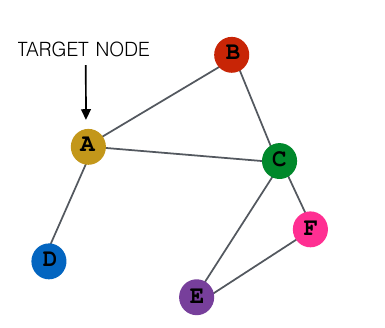
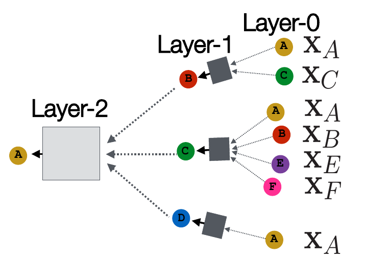

浅层的node2vec的方法相当于一个单层的映射关系，存在许多局限性。例如不同的节点之间没有共享的参数，所有节点都有自己单独的embedding，导致模型的泛化能力不好，只能针对训练中给定的图的节点。因此需要更复杂有效的深层网络来应对实际场景中复杂多变的图网络。
一、图的深度学习基础
1. 符号
- \(V\) 表示图的点集
- \(\mathbf{A}\) 表示图的邻接矩阵（\(a_{ij} = 1\)表示存在从点 \(i\) 到点 \(j\) 的边）
- \(\mathbf{X} \in \mathbb{R}^{m\times |V|}\) 为表征节点特征的向量组成的矩阵。每列表示一个节点，例如关注节点的颜色，则节点的特征向量可以表示为以RGB方式表示的三维向量。如果没有特殊的特征需要关注，则可以使用 one-hot 编码的方式进行表示
2. 思路
基本的思路是，以一个节点为中心的局部的网络结构影响这个节点的特征，因此需要基于这个局部网络和节点自身产生对节点的最终表示向量。其中，其邻接点的信息可以用深度神经网络进行整合，将得到的结果以一定的方式和节点自身结合，从而得出最终的表示向量。例如对于以下的图，我们想对节点 A 进行 embedding，得到它的表示向量：

则首先需要考虑 B、C、D 对 A 的影响。如果需要知道更长远的影响，则还需要考虑 B、C、D 的邻居对 A 的影响，即 F、E 对 A 的影响。假设我们只考虑两层的深度（注意这里的深度不是神经网络的深度，而是指考虑多少层邻居），则得到 A 的表示向量的过程如下图所示：

这其中，\(X_N\) 表示的是节点 \(N\) 输入的特征向量，即矩阵 \(\mathbf{X}\) 中节点 \(N\) 对应的向量。圆形表示的是对应节点的表示向量，并不一定同一字母都是相同的，例如 Layer-0 中都是输入的特征向量，但 Layer-1 中可能并不继续使用输入的特征向量。而正方形中则表示的是用来提取局部网络信息的深度神经网络，例如 CNN、Attention 等。这些神经网络的输入是由当前点的邻接点决定的，可以使用取平均值、max pooling 等方法对邻居的表示向量（多个向量）进行处理，从而得到与 \(X_N\) 本身形状相同的向量（一个向量）。
从这张图就可以看出，对网络的优化可以有四个方面：
- 正方形中的网络结构
- 将邻接点的表示向量整合成正方形中网络输入的方法
- 正方形中网络输出与节点自身的表示向量的结合方法
- 每层中节点自身的表示向量的选取
得到了最后的 embedding 之后，就可以用于一系列的任务，例如过一个全连接层，再加上一个 softmax 进行节点的分类；用节点 embedding 的 cos similarity 预测两个节点间是否有边。
3. 公式
有了以上的原理，很明显实现的过程可以用递归的方法进行。这里以取平均值的方式对邻居的向量进行处理，方块中的神经网络取最简单的全连接层。假设当前想要得到节点 \(v\) 的 embedding，以 \(h_v^k\) 表示在 Layer-k 之后节点 \(v\) 的表示向量，以\(N(v)\) 表示节点 \(v\) 的邻接的点的集合，大写的\(K\)作为给定的深度，\(z_v\) 表示最后得到的节点 \(v\) 的 embedding。则 embedding 的过程可以用以下过程定义： \[ \begin{array}{lr} h_v^0 = x_v （递归基）\\ h_v^k = ReLU(\mathbf{W_k}\sum_{u\in N(v)} \frac{h_u^{k-1}}{|N(v)|}+\mathbf{B_k}h_v^{k-1}),\forall k \in \{1,...,K\} \\ z_v = h_v^k \end{array} \] 这里的激活函数使用的是\(ReLU\)，也可以换用别的。实际实现中可以令 \(\mathbf{H^k} = [h_1^{k^T}, h_2^{k^T}, ..., h_n^{k^T}]^T\)，利用上述的过程进行前向传播的计算。
可以看到实际上 \(\mathbf{W_k}\) 和 \(\mathbf{B_k}\) 起到提取特征的作用，根据不同的场景，可以设计不同的网络进行特征的提取，例如用 CNN 进行特征的提取。但是训练完成之后，这些部分的参数是可以在不同的图网络之间共享的，而不是像浅层的 node2vec 一样每列参数对应唯一的节点，因此可以使模型具有更好的泛化能力。
二、图卷积网络（Graph Convolutional Networks，GCN）
在上一部分的基础上，令\(\mathbf{H^l} = [h_1^{l^T}, h_2^{l^T}, ..., h_n^{l^T}]^T\)（注意转置，这里一行是一个节点的向量表示）表示第 \(l\) 层的各节点 embedding 组成的矩阵（这里用 \(l\) 而不用 \(k\) 是和论文中的公式格式一样）。则图卷积网络的层间递推公式为： \[ \mathbf{H^{l+1}} = \sigma (\tilde{D}^{-\frac{1}{2}} \tilde{A} \tilde{D}^{-\frac{1}{2}} \mathbf{H^l} \mathbf{W^l}) \] 其中符号表示如下：
\(\tilde{A}\)：邻接矩阵加上单位阵，即给每个节点加上自环，\(\tilde{A} = A + I_{|V|}\)
\(\tilde{D}\)：\(\tilde{A}\)的度矩阵，为对角阵，\(\tilde{d_{ii}} = \sum_j \tilde{a_{ij}}\)，\(-\frac{1}{2}\)次在此处的作用是使矩阵对角元素同变换为原来的\(-\frac{1}{2}\)次
\(\mathbf{W^l}\)：层 \(l\) 的参数矩阵
\(\sigma\)：激活函数，例如sigmoid或者ReLU
注意\(\tilde{D}\)矩阵是一个对角阵，因此 \(\tilde{D}^{-\frac{1}{2}} \tilde{A} \tilde{D}^{-\frac{1}{2}}\) 的部分可以直接算出来，结果表示为 \(A'\) 矩阵，则其元素满足 \(a_{ij}' = d_{ii}^{-\frac{1}{2}} \tilde{a_{ij}} d_{jj}^{-\frac{1}{2}}\)。由于 \(d_{ii}\) 其实是节点 \(i\) 的度（自环只计算为一度），因此相当于对邻接矩阵的每个元素除以了对应两节点的度的开方的乘积。之后再乘一个参数矩阵\(\mathbf{W^l}\)并通过一个激活函数得到下一层。因此其实可以用类似前一部分的方式将公式改写为更可读的方式： \[ h_v^k = \sigma (\mathbf{W_k} \sum_{u\in N(v) \cup\\{v\\}} \frac{h_u^{k-1}}{\sqrt{|N(u)||N(v)|}}) \] 其实和上一部分对比来看，GCN相当于把节点自身的表示也和邻居的表示划为同类一起计算，同时调整了对邻居的表示取平均的做法。如果把 \(\tilde{D}^{-\frac{1}{2}} \tilde{A} \tilde{D}^{-\frac{1}{2}}\) 改成 $^{-1} $，在把自身的表示与邻居共同讨论的前提下，就与上一部分的想法是一致的了。当然，GCN 之所以如此调整，是有更深刻的数学依据的，这里只是用了一种比较简单的方法使大家对 GCN 公式能有更好的记忆，其背后的数学原理就不展开了，如果有兴趣可以阅读参考文献中的第二篇。
三、图注意力网络（Graph Attention Networks，GAT）
为图神经网络添加注意力机制的想法来源于递归的式子： \[ h_v^k = ReLU(\mathbf{W_k}\sum_{u\in N(v)} \frac{h_u^{k-1}}{|N(v)|}+\mathbf{B_k}h_v^{k-1}),\forall k \in \\{1,...,K\\} \] 这个式子中的 \(\frac{1}{|N(v)|}\) 表示的是所有的邻接点都有一样的重要性，即取平均作为局部网络的表示，而实际上可能并不是所有邻接点的贡献都是一样的。例如预测我是怎么样的一个人，可能要考虑我的朋友都是怎么样的人，但我的朋友中有些人和我比较亲密，有些人则比较疏远，那么和我比较亲密的人可能有更大的参考价值。而在我的社交网络图上，则可能用边的权重来表示和我的亲密程度。因此可能对不同的邻接点，需要有不同的系数，而不是统一为\(\frac{1}{|N(v)|}\)。
具体而言，以 \(e_{vu}\) 表示节点 \(u\) 对编码节点 \(v\) 的贡献（一个标量），则有： \[ e_{vu} = attention(\mathbf{W_k}h_u^{k-1}, \mathbf{W_k}h_v^{k-1}) \] 之后再对 \(e_{vu}\) 进行归一化处理，得到节点 \(u\) 的注意力系数 \(\alpha_{vu}\)： \[ \alpha_{vu} = \frac{\exp(e_{vu})}{\sum_{k\in N(v)}\exp (e_{vk})} \] 而对于注意力函数 \(attention\) 的选取，则是可以进行研究的部分。最简单的可以是过一个全连接层得到结果，当然也可以同时考虑邻居以及边的权重。也可以参考 Transformer 中的多头注意力模型，用多组平行的注意力头进行计算，将最后得到的向量拼接作为结果。
参考文献
[1] Stanford CS224W: Machine Learning with Graphs，Lecture 8 - Graph Neural Networks
[2] Semi-Supervised Classification with Graph Convolutional Networks (ICLR 2017, Thomas)